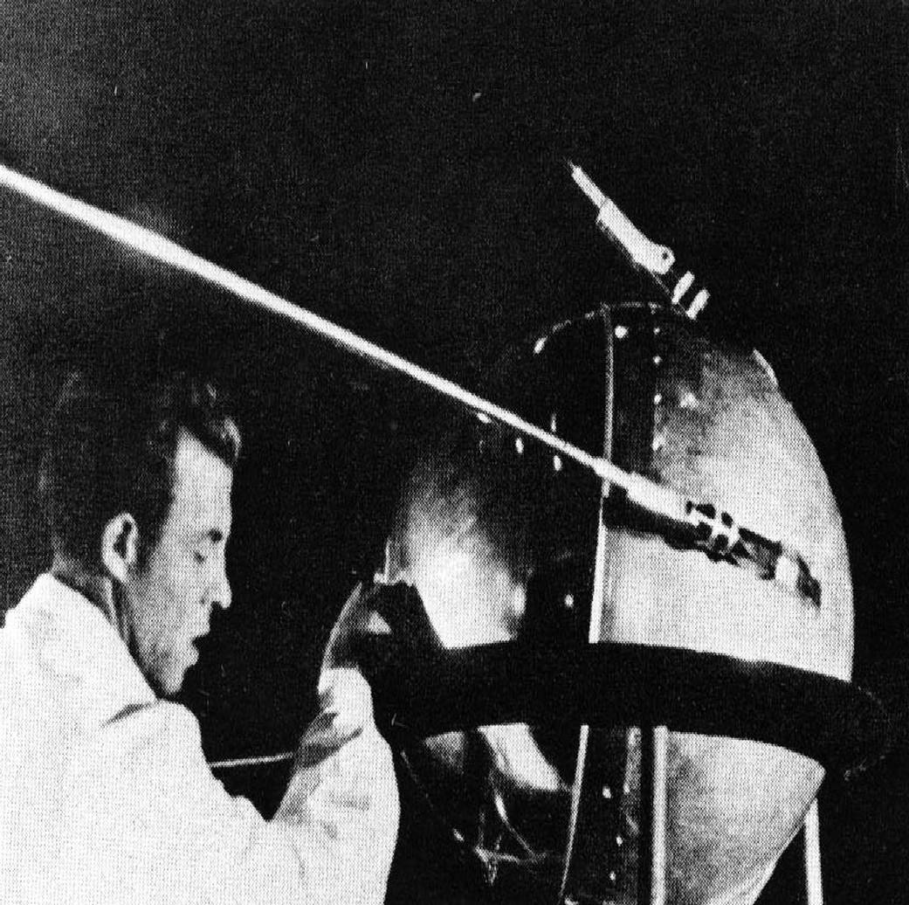
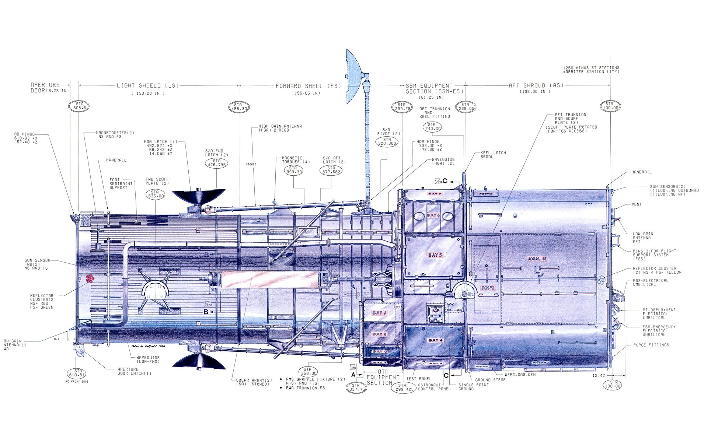
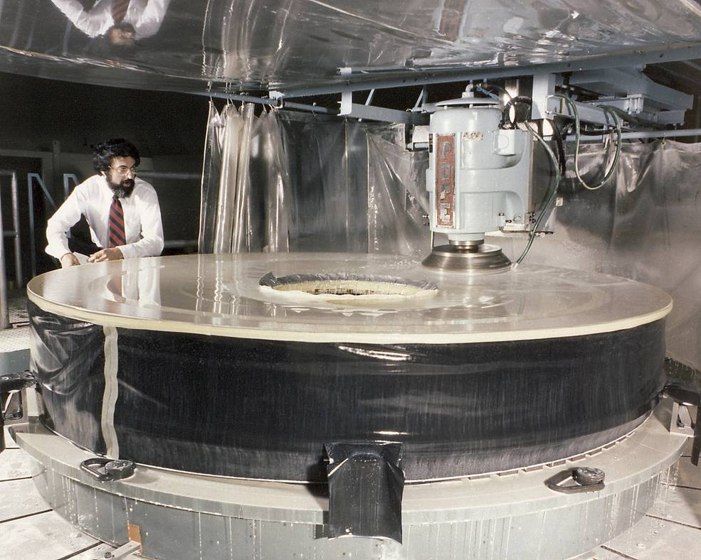
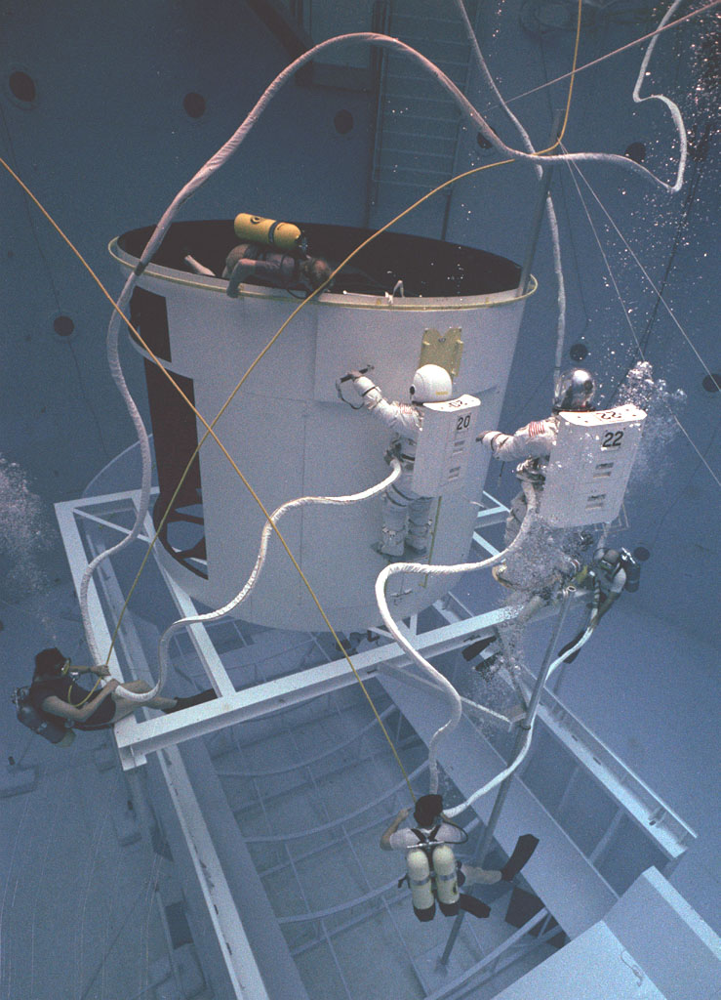
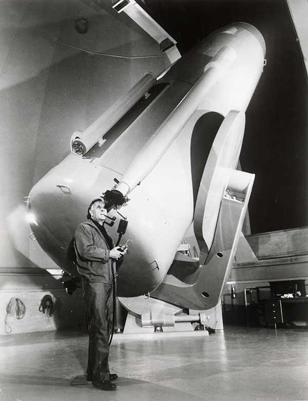
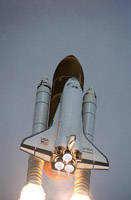
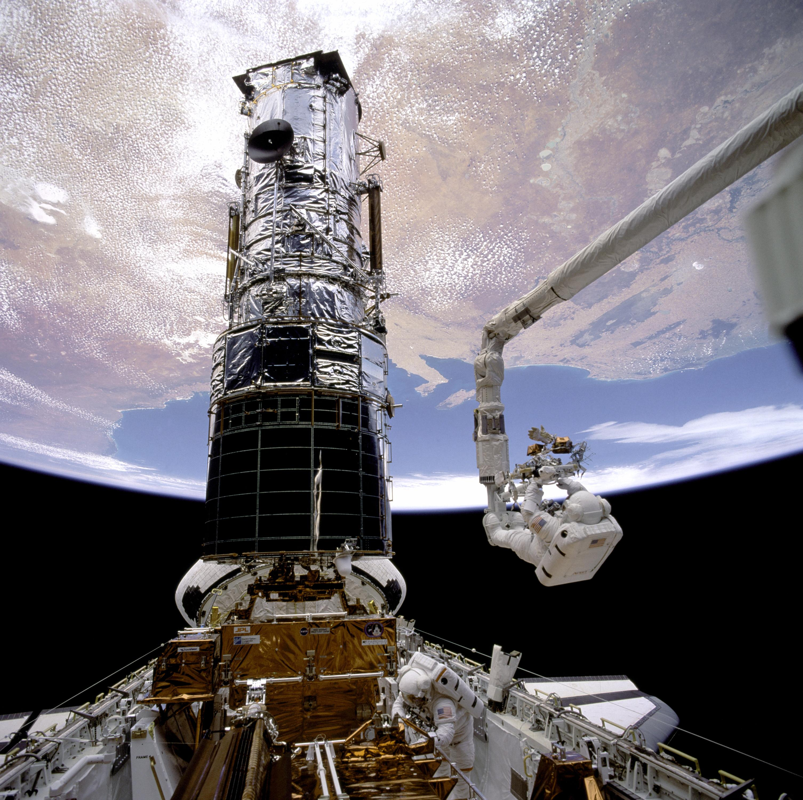
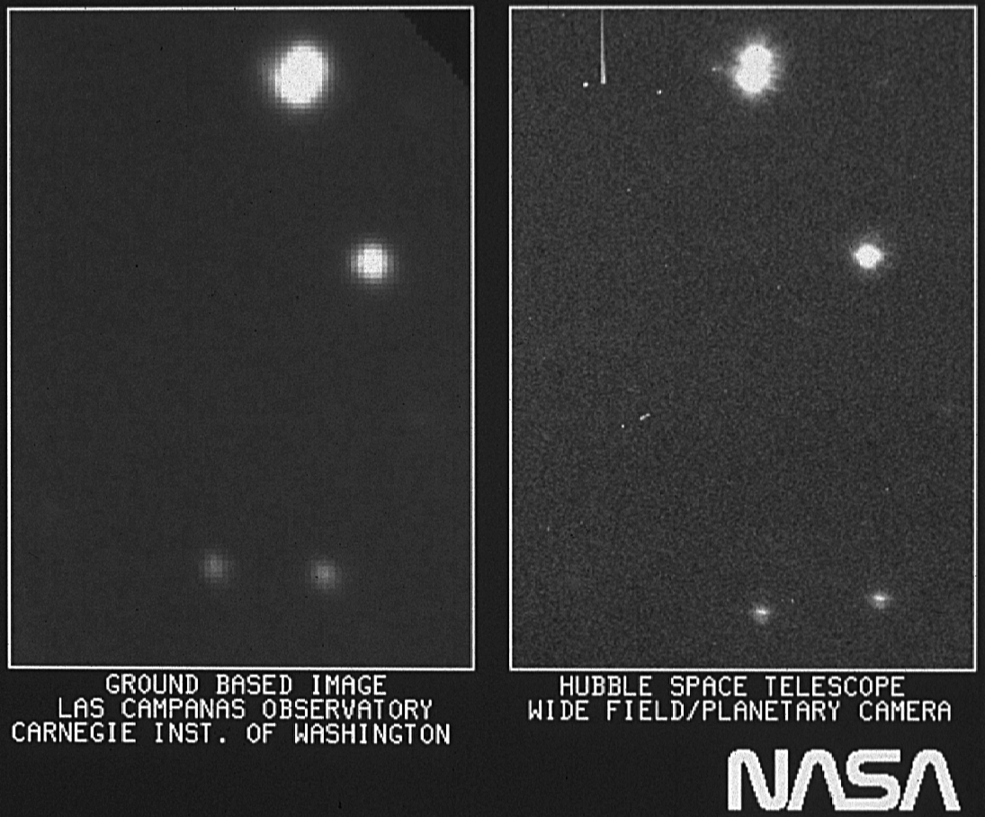
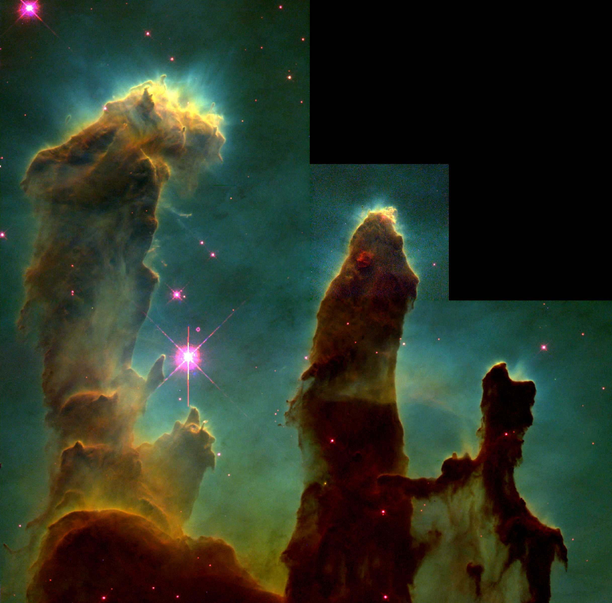

1946년, 예일 대학의 천체물리학자
Lyman Spitzer 주니어는 우주에서
오는 천문학의 장점에 대한 논문을 발표했고 큰 우주 망원경의
아이디어를 소개했다. 그 당시에는 어떤 위성도 아직 궤도로
발사되지 않았다.
소련은 최초의 인공위성
스푸트니크 1호를 성공적으로
발사했다. 스푸트니크는 비치볼 밖에 안되는 크기였고, 무게는
193파운드 밖에 되지 않았다. 지구 궤도를 한 바퀴 도는 데 약
98분이 걸렸다. 스푸트니크의 발사는 미국과 소련 사이의 우주
경쟁의 시작을 야기했다. 미국은 곧이어
1958년 1월 31일 첫 인공위성 익스플로러 1호를 발사했다.
우주를 바라보다.
우주를 바라보다.

1957년 소련이 스푸트니크 1호를 발사한 후, 의회는 1958년 7월 우주법을 통과시켰다. 1958년 10월 1일, 미국항공우주국(NASA)과 다른 정부 기관들이 우주법을 제정하였다.
1969,
프로젝트 시작
미국 국립 과학 아카데미는 "대형 우주 망원경의 과학적 사용"이라는 제목의 보고서를 출판하고 이 프로젝트에 대한 지원을 제공을 시작하기로 결정했다.

1974,
작업을 시작하다.
천체물리학자들과 엔지니어들은 대우주망원경을 위한 첫 실무그룹 회의를 열었다. 이 회의는 우주 망원경의 개념뿐만 아니라 우주선에 대한 예산과 기술적 요구 사항들을 개발하였다.

1979,
본격적인 훈련
초기부터 허블은 우주 비행사에 의해 업그레이드 될 수 있도록 설계되었다. 1979년, 우주 비행사들은 우주 망원경을 수리하기 위한 미래의 임무를 위한 훈련을 시작했다.

1983,
에드윈 허블을 기리며
1983년, 대우주망원경은 우리 우주에 다른 은하들이 존재하며 은하수가 멀어질수록 점점 더 빠른 속도로 멀어지고 있다는 것을 증명한 천문학자 에드윈 허블의 이름을 따서 이름이 바뀌었다.

1986,
허블, 우주로 가다.
STS-31 우주왕복선 디스커버리호는 플로리다 케네디 우주센터에서 5명의 우주인과 허블 우주 망원경을 싣고 발사되었다.

결함 발생, 첫번째 미션

NASA는 허블의 주 거울에
spherical aberration라고 불리는
결함이 있으며, 이는 망원경의 이미지의 선명도에 영향을
미쳤다고 발표했다. 거울의 곡률은 사람 머리카락의 1/50 폭인
2microns만큼 떨어져 있어 이미지를 약간 흐리게 만들었다.
허블 망원경의
"첫 번째 빛" 이미지는 망원경의
초점을 맞추기 위해 광역 및 행성 카메라를 통해 촬영되었다. 이
사진은 허블 망원경의 해상도가 지상 관측소와 비교했을 때
향상된 모습을 보여주었으며, 허블 망원경의 영상이 지상
관측소보다 약 50% 더 선명하다는 것을 보여주었다.
결함 발생, 첫번째 미션

NASA는 허블의 주 거울에 spherical aberration라고 불리는
결함이 있으며, 이는 망원경의 이미지의 선명도에 영향을
미쳤다고 발표했다. 거울의 곡률은 사람 머리카락의 1/50 폭인
2microns만큼 떨어져 있어 이미지를 약간 흐리게 만들었다.
허블 망원경의 "첫 번째 빛" 이미지는 망원경의 초점을 맞추기
위해 광역 및 행성 카메라를 통해 촬영되었다. 이 사진은 허블
망원경의 해상도가 지상 관측소와 비교했을 때 향상된 모습을
보여주었으며, 허블 망원경의 영상이 지상 관측소보다 약 50% 더
선명하다는 것을 보여주었다.
November 2, 1995
창조의 기둥
독수리 성운 (M16)에 높이 솟은 가스와 먼지 기둥의 허블의 상징적인 이미지가 세상에 공개되었다. '창조의 기둥'이라는 별명을 가진 이 이미지는 성간 가스의 밀집된 주머니에서 생겨난 신생 별들을 보여준다.

January 15, 1996
허블 딥 필드
허블 딥 필드 이미지를 공개했다, 허블 딥 필드 이미지는 그 당시 우주의 가장 깊고 상세한 모습이었다. 1995년 12월 광시야와 행성 카메라 2로 10일 연속 촬영된 342개의 개별적 노출로 구성된 이 사진에는 다양한 발달 단계에서 적어도 1,500개의 은하가 포함되어 있다. 그 이미지는 대략 75피트 떨어진 곳에서 보이는 10센트짜리 동전 크기인, 하늘의 작은 부분을 나타낸다.